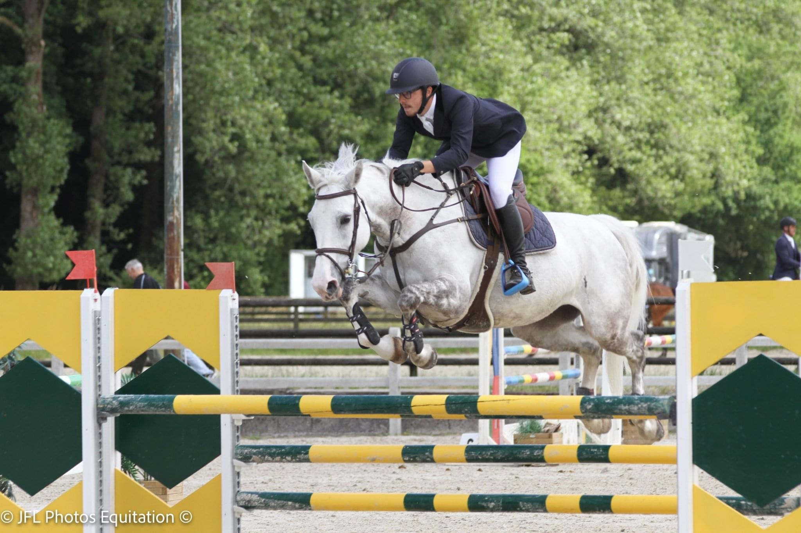

Accueil
Bienvenue sur le site dédié à mon TFE : "Création d'un podcast équestre avec la LEWB". Découvrez ce projet qui vise à mettre en lumière le monde équestre wallon à travers un format moderne et impactant.
Bienvenue sur notre plateforme dédiée aux passionnés de sport !
Découvrez un espace unique où les amateurs et professionnels du sport se retrouvent pour partager, acheter, et vendre du matériel de qualité. Que vous soyez débutant, expert, ou simplement curieux, notre mission est de vous accompagner dans votre pratique en vous proposant des équipements adaptés à vos besoins et à des prix accessibles.
Plongez dans une communauté dynamique, engagée dans une démarche éco-responsable, où chaque article trouve une nouvelle vie. Ensemble, faisons du sport une aventure plus durable et solidaire.
Prêt à démarrer ? Explorez nos catégories et trouvez ce qu'il vous faut pour atteindre vos objectifs sportifs ! 💪
À propos
Bienvenue sur mon site dédié à la création d’un podcast pour la Ligue Équestre Wallonie Bruxelles (LEWB) !
Je m’appelle Antoine, et ce projet s’inscrit dans le cadre de mon Travail de Fin d'Études. Passionné par le monde équestre et convaincu du pouvoir de la communication, j’ai décidé de créer un podcast pour donner une nouvelle voix à la communauté équestre en Wallonie et à Bruxelles.
Mon objectif est clair : rassembler les passionnés de sports équestres autour d’histoires inspirantes, de conseils d’experts et d’actualités qui reflètent la richesse de cet univers. Avec ce podcast, je souhaite :
- Partager les expériences et témoignages des cavaliers, entraîneurs et professionnels qui animent la LEWB.
- Mettre en lumière les projets, événements et innovations qui font vibrer notre communauté.
- Offrir un espace d’échange et d’inspiration pour tous les amoureux des chevaux.
Merci de m’accompagner dans cette aventure ! J’espère que ce podcast saura vous inspirer autant que j’ai de plaisir à le créer.
À très bientôt,
Antoine 🐴🎙
Ressources
Téléchargez ou accédez aux ressources liées à ce TFE :